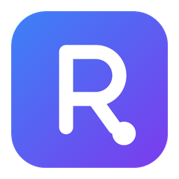
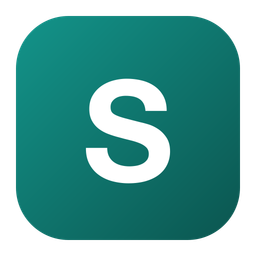
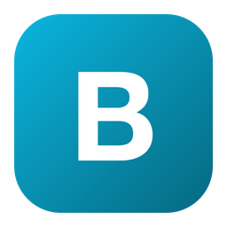

CV Studio Apps
Alle Apps der Plattform als Programm für Windows und Mac, und als App für iPhone, iPad und Android. Funktionieren auch ohne Internet, dein Lebenslauf bleibt auf deinem Gerät, bis du ihn online stellst.
- Windows 10/11
- Mac (Apple-Chip & Intel)
- iPhone & iPad
- Android
- Lokale KI (kostenlos)
Wähle deine App
Jede App hat ihre eigene Seite mit Downloads für Windows und Mac sowie der Installation für das Handy.

RabtaChat, Anrufe und MeetingsDownload →
CV Studio ShopShop für GeschäftskundenDownload →
CV Studio BeraterPortal für KarriereberaterDownload →Handy und Tablet
Eine App für alles: CV Studio hat einen Start-Bildschirm mit allen Apps und dem Steuer-Assistenten. Dieselbe App findet den Server selbst, auch wenn sich die Adresse ändert.
Android: CV Studio (alle Apps)
APK · Flutter
Android 7 oder neuer. „Installation aus dieser Quelle“ einmal erlauben.
Herunterladen ↓iPhone und iPad
Installierbare Web-App · Safari
Seite öffnen → Teilen → Zum Home-Bildschirm. Eine App-Store-Version braucht ein Apple-Entwicklerkonto.
Öffnen →Steuer-Assistent
Lokal auf dem Computer · eigene KI
Sortiert Steuerunterlagen, nichts verlässt deinen Rechner.
Zur Seite →Der Quellcode der Handy-Apps ist öffentlich: github.com/romal10/cv-studio-mobile (nur die App-Hülle, die Plattform bleibt privat).
Einzelne Apps als eigene Android-App: CV Studio · Rabta · Kairos Kalender · FRISO Salon · AROS Restaurant · EVENTO Events · CV Studio Shop · CV Studio Berater · CV Studio Unternehmen
So kommt eine App auf dein Gerät
- Windows und Mac: Download auf der Seite der App wählen, installieren.
- iPhone und iPad: in Safari öffnen → Teilen → Zum Home-Bildschirm.
- Android: die APK oben laden und installieren (oder in Chrome öffnen → App installieren).
Warnung beim ersten Start
Die Apps sind noch nicht von Apple oder Microsoft signiert. Auf jeder App-Seite steht Schritt für Schritt, wie du sie einmalig freigibst (Mac: Systemeinstellungen → Datenschutz & Sicherheit → Trotzdem öffnen, Windows: Trotzdem ausführen).
Lokale KI, auch offline
Auf Windows und Mac richtet die App auf Wunsch eine kostenlose lokale KI (Ollama) ein. Sie läuft im Hintergrund, braucht keinen Schlüssel und deine Texte verlassen das Gerät nicht. Auf iPhone, iPad und Android ist das technisch nicht möglich, dort läuft die KI online.